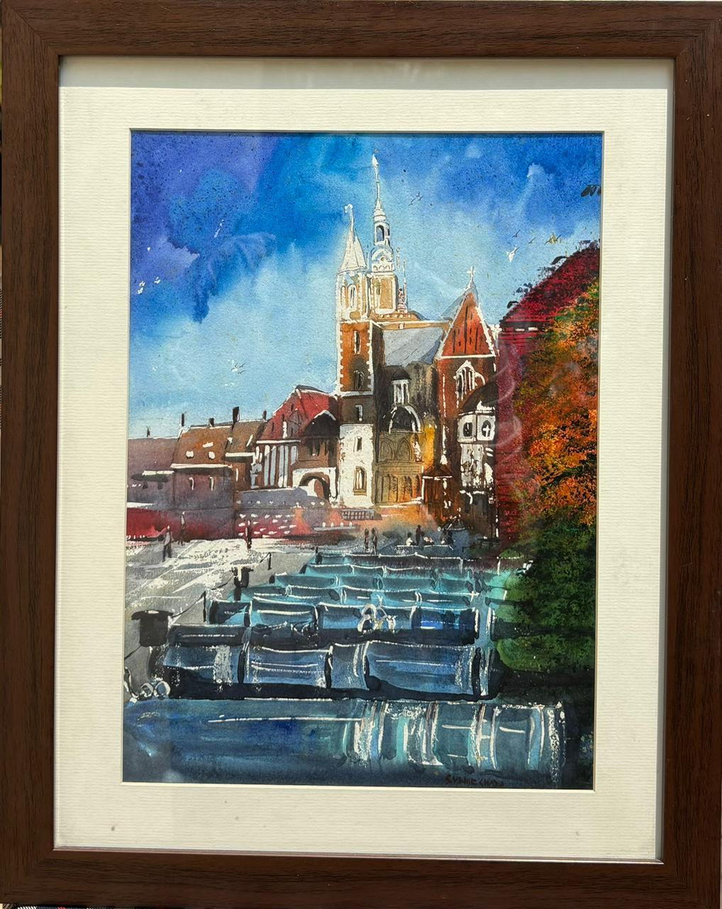
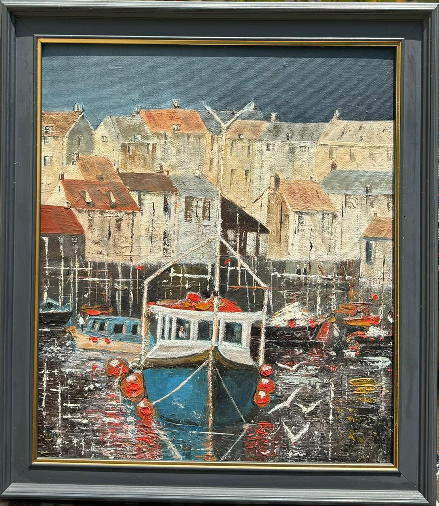
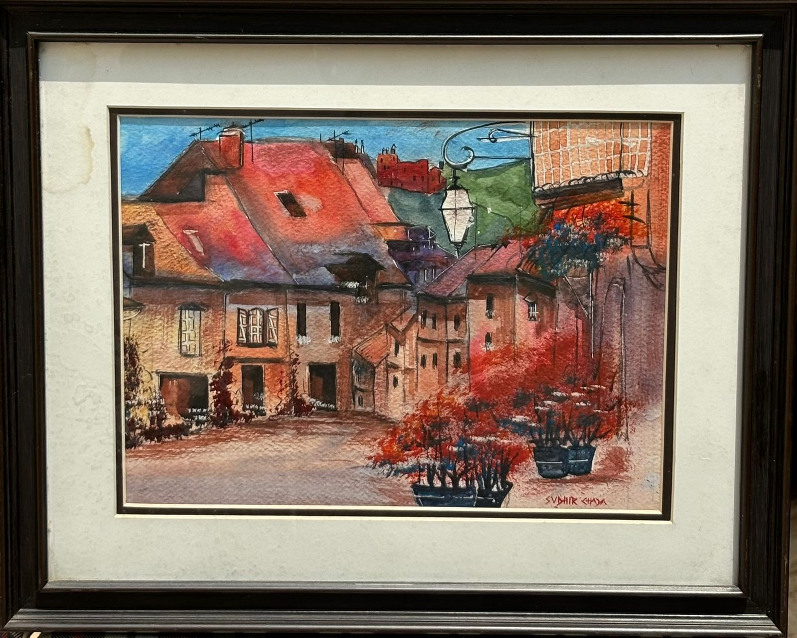
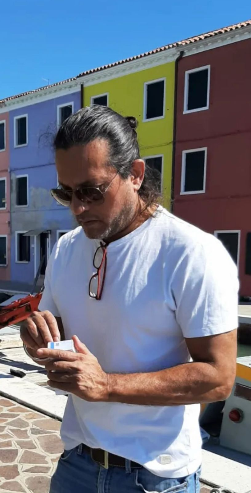

Capturing the Soul of Architecture in Watercolor
Discover a selection of distinctive pieces that showcase the artist's unique vision and mastery of watercolor.

Watercolor on Paper

Watercolor on Paper

Watercolor on Paper

Sudhir Chada specializes in capturing the timeless beauty of architectural landscapes through watercolor.
Each piece tells a story of place, memory, and time. With a keen eye for detail and a masterful command of light and color, the work invites viewers to experience familiar scenes in new ways.
Learn More →Get in touch to discuss custom artwork, available pieces, or to arrange a studio visit.
Contact Now